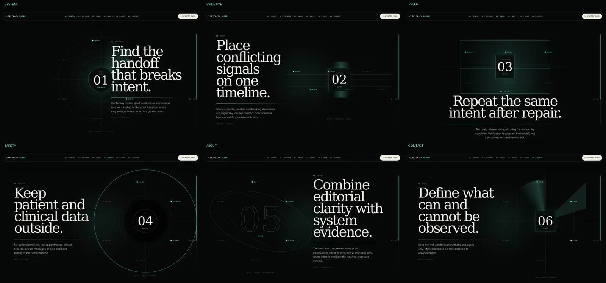

PORTFOLIO / 2026GDANSK, PL
Engineeringsystems thatwithstand inspection.
EngD materials scientist and senior process engineer building evidence-gated systems across Industrial AI, digital manufacturing and quality intelligence.
The industrial perspective
Not another AI portfolio.
A record of engineering judgment.
I work where process variation, imperfect evidence and automated decisions meet. The goal is not a polished prediction. It is a system that exposes assumptions, blocks premature conclusions and leaves a trail another engineer can inspect.
Three systems.
Three kinds of uncertainty.
Scroll through the work as an investigation: problem → decision → system → proof → boundary.
Manufacturing Root Cause Intelligence.
An evidence-gated quality investigation workflow that refuses to turn correlation into causality.
- Problem
- SPC alarms and associations can look decisive before independent evidence exists.
- Decision
- Keep hypotheses at
TESTEDuntil metrology or controlled intervention, an explicit plan and named human approval are present. - System
- FastAPI · SPC/Pareto/capability · DMAIC/8D · physical-reference layer · append-only SHA-256 audit chain.
- Proof
- Premature confirmation returns HTTP 409; strong unresolved contradiction blocks progression.
- Boundary
- Incident runs are synthetic. The MVP is in-memory and is not a production MES or causal model.

ClinicPath Radar.
A cinematic, evidence-labelled demonstration of how a complex care-navigation journey can remain understandable without pretending to provide medical advice.
- Problem
- Healthcare navigation interfaces can hide uncertainty behind confident product language.
- Decision
- Separate system, evidence, proof and safety into explicit public routes; label every journey item as synthetic.
- System
- React 19 · TypeScript · Vite · Three.js · route-level lazy loading · reduced-motion path.
- Proof
- TypeScript/ESLint, 9/9 unit tests, 13 Playwright passes with one expected skip, and 12/12 route/viewport checks.
- Boundary
- Demonstration only: synthetic content, no patient data, diagnosis or booking backend.

Quality signals before dashboard theatre.
A manufacturing data demonstrator where validation and traceability happen before metrics reach the screen.
- Problem
- A dashboard can make invalid or untraceable data look authoritative.
- Decision
- Validate structure, lineage and quality constraints before exposing anomaly and drift signals.
- System
- Python · FastAPI · DuckDB/SQL · responsive analytics · Docker · CI.
- Proof
- 22 tests, 93% coverage, DuckDB checks and container smoke verification.
- Boundary
- Synthetic fixtures only; no employer, customer or production-line data.
Credibility is not a claim.
It is a receipt.
Software informed by physical process.
My engineering foundation spans materials science, PVD and thin films, SMT process engineering, validation, AOI, FMEA and corrective-action systems. That context changes how I build software: uncertainty is exposed, traceability is designed in, and automation does not erase human responsibility.